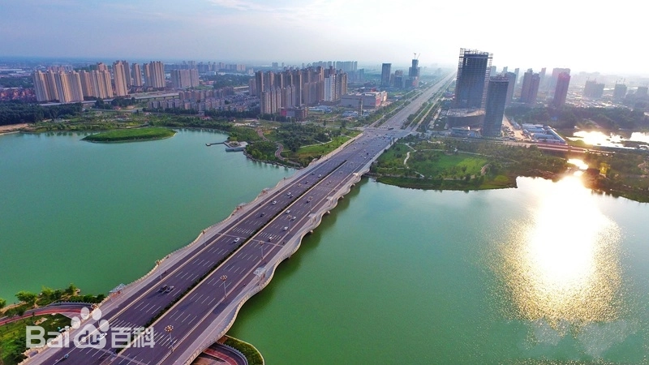

开封古称汴梁，开封二字取“开土封疆”之意。春秋郑筑启封城，取“启拓封疆”之义。战国魏都于此称大梁。《史记》避景帝刘启讳改开封县。
开封市位于黄河中下游冲积平原的东部，全区由黄河冲积形成，低平坦荡。西距省会郑州70公里，北依黄河，南接黄淮平原，东连华东诸省。开封市辖五县五区，是河南省省辖市，中国首批公布的24座历史文化名城之一。古称汴梁、汴京、东京，简称汴，七朝古都，迄今已有2700余年的历史。开封丰富的文化景观、旅游景点与众多市内湖泊相映成趣，是一座古都风貌与现代文明融为一体、亮丽典雅、特色鲜明、有较高品味的文化名城。
开封市是首批国家历史文化名城，华夏文明的重要发祥地，迄今已有4100余年的建城史和建都史，先后有夏朝，战国时期的魏国，五代时期的后梁、后晋、后汉、后周，宋朝，金朝等在此定都，素有“八朝古都”之称 ，孕育了上承汉唐、下启明清、影响深远的“宋文化”。开封是北宋时期海上丝绸之路的中心城市，陆上丝绸之路东部起点城市 。自宋代以后，历代王朝都把开封作为中国北方的区域性政治、经济和文化中心 。开封是世界上唯一一座城市中轴线从未变动的都城，城摞城遗址在世界考古史和都城史上少有。宋朝都城东京城是当时世界第一大城市，是清明上河图的创作地。
开封菊花经过1000多年的延续和发展，由早期的只有黄色品种，发展到红色、黄色、白色、紫色、绿色和复色等各种颜色花型各异的品种，其中也包括了很多优良的传统品种。中国传统菊花的特点表现色彩丰富，姹紫嫣红，花型繁多，千姿百态。
国槐，它代表着开封，是开封的形象。国槐，其质朴而坚韧的性格、展现的蓬勃生机，特别适合陪伴这座历经沧桑的古都。国槐代表了开封人顽强不屈、坚韧不拔的品格，展现了开封人奋发图强、不断进取的精神风貌。
开封市地处华北平原腹地、河南省东部，位于黄河下游南岸之滨。开封居于东经113°52′15"—115°15′42"，北纬34°11′45"—35°01′20"之间。 开封东与商丘市相连，距黄海500千米，西与省会郑州市毗邻，南接许昌市和周口市，北依黄河，与新乡市隔黄河相望。 开封市南北最宽约92千米，东西最长约126千米，总面积6239平方千米
开封市地处中原腹地，地势平坦、土壤肥沃，多为粘土、壤土和沙土，适宜各类农作物种植。 开封境域内，因黄河泥沙淤积使黄河河床不断抬高，形成了河高于城的“地上悬河”。开封地下则因历次黄河水患使开封数座古都城、府州城池深深埋于地面之下3米至12米处，上下叠压着6座城池， 其中包括3座都城、2座省城及1座州城，构成了中国罕见的城摞城奇特景观。
开封市境内河流湖众多，分属黄河和淮河两大水系。黄河大堤以北地区属于黄河水系，流域面积约281平方千米；黄河大堤以南地区属于淮河水系，主要河流有惠济河、马家河、汴河、贾鲁河、涡河等，流域面积约5985平方千米。 开封市中心城区内五湖四河环绕市区，水域面积达220多公顷，约占开封中心城区建成区面积的1/10，素有“北方水城”之称。
开封市属温带季风气候，四季分明，一般气候特点是冬季寒冷干燥，春季干旱多风，夏季高温多雨，秋季天高气爽。多年平均气温为14.52℃，多年平均无霜期为221天，多年平均降水量为627.5毫米，降水多集中在夏季的7、8月份
开封的先民活动最早可追溯至新石器时代。开封市祥符区万隆岗遗址和尉氏县洧川镇断头岗遗址，发现了数处新石器早期裴李岗文化遗址，其发掘证明，早在五、六千年前，开封市域内就已经有人类活动。 北宋建隆元年（960年），后周殿前都点检、宋州归德军节度使赵匡胤在开封城北40里的陈桥驿（今属新乡市封丘县）发动“陈桥兵变”，以“宋”为国号，建立宋朝，建都东京开封府。大宋王朝是开封历史上最为辉煌的时代，经济文化发达、社会生活繁荣，开封城内人口达一百五十万。（《宋史 地理志》记载崇宁年间，开封有二十六万一千一百一十七户，四十四万二千九百四十口。 大宋东京城富丽甲天下，繁荣兴旺达到鼎盛，成为当时全国的政治、经济、文化中心，也是世界上最繁华的大都市。史书更以“八荒争凑，万国咸通”来描述当时大宋都城开封的繁华。北宋画家张择端的作品《清明上河图》，生动描绘了清明时节北宋东京开封城汴河两岸的繁华、热闹的景象和优美的自然风光。
开封已探明的地下矿产资源有煤炭、石油和天然气等，预计石油总生成量约为5.6亿吨，天然气储量约为485亿立方米。煤炭资源埋藏较深， 预测可靠储量约为77.9亿吨。此外，地下还有丰富的石灰岩、岩盐、石膏等矿产资源
开封市生物资源丰富，陆生植物和水生植物有800多种。动物种类繁多，主要有猪、牛、羊、驴、鸡、鸭、鹅、兔及鱼类、鸟类等饲养动物和野生动物60余种， 已成为河南省重要的猪、牛、羊繁育基地，所产的开封黄河鲤鱼被誉为鱼之上乘而闻名中外。
开封市有国土面积约为628,240.26公顷；园地面积约10,456.84公顷，占1.66%；林地面积约24,026.27公顷，占3.90%；居民点及工矿用地约83,750.85公顷，占13.33%；交通用地约17,822.06公顷，占2.84%；水域约46,964.21公顷，占7.48%；未利用土地约10,487.90公顷，占1.67%。
开封市境内水资源主要包括地表水和浅层地下水，水资源总量多年平均为8.35亿立方米（不含过境水）。其中地表水约为3.51亿立方米，占资源总量的42%，地下水可供开采量4.84亿立方米，占资源总量的58%。
截至2023年6月，开封市辖5个区、4个县。其中，兰考县系省直管县，城乡一体化示范区归龙亭区建制。开封市人民政府驻河南省开封市晋安路158号。
根据第七次人口普查数据，截至2020年11月1日零时，开封市常住人口为4824016人。
截至2023年末，开封市常住人口471.40万人，比上年末增加2.00万人，其中城镇常住人口257.10万人。常住人口城镇化率为54.54%，比上年末提高1.01个百分点。全年出生人口3.20万人，人口出生率为6.80‰；死亡人口4.10万人，人口死亡率为8.72‰；人口自然增长率为-1.92‰。